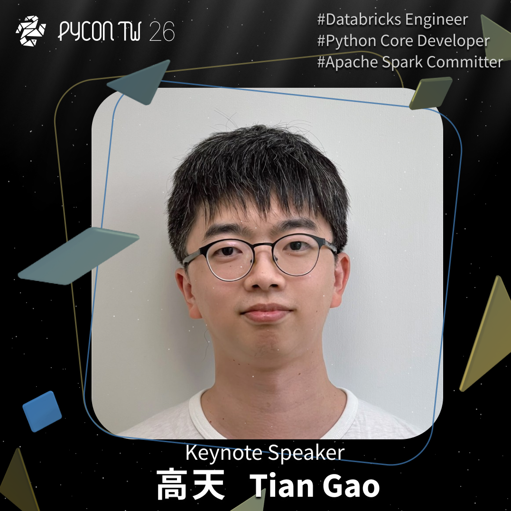

PyCon TW 2026 Keynote 2 高天 Tian Gao - 從 CPython 到 PySpark
Posted on Mon 10 August 2026 in announcement

PyCon TW 2026 Keynote 2 高天 Tian Gao - 從 CPython 到 PySpark
對於每天使用的頂級開源專案，你是否也曾好奇過：那些看似神秘的 Core Dev 究竟是如何加入的？他們平時都在做些什麼？如果自己也想成為其中一員，該從何下手？
在 #PyConTW2026，我們非常榮幸邀請到 Databricks 工程師、Python Core Developer、pdb 負責人暨 Apache Spark Committer 高天 (Tian Gao) 擔任 Keynote 講者，帶來專題演講：「從 CPython 到 PySpark」。
從 2022 年第一次接觸大型開源專案，到 2024 年成為 Python 核心開發者，再到 2026 年成為 Apache Spark Committer，高天將以親身經歷揭開大型開源專案的神秘面紗。他將分享零開源經驗者如何跨出第一步，以及過去一年在 PySpark 領域打磨 Python 體驗的實戰經驗。
🛠️ 無論你是想尋找參與開源專案的切入點，還是希望提升個人與公司產品的品質，這場 Keynote 絕對能為你提供明確且可行的實踐路徑！
—
PyConTW 2026 | 重新定義，科技與人之間的可能
📅 大會日期：2026/10/17~2026/10/18
📍 大會地點：臺北醫學大學（預定）
🔔 立即購票參戰：👉 https://lihi1.me/9wIMG
PyCon TW 2026 Keynote 2 Tian Gao From CPython to PySpark
Ever wondered how developers join massive open-source projects used by millions every day? What do they actually do behind the scenes, and how can you become a part of these communities?
At #PyConTW2026, we’re thrilled to welcome Tian Gao—Databricks Engineer, Python Core Developer, pdb maintainer, and Apache Spark Committer—as one of our Keynote speakers! His talk, "From CPython to PySpark," will break down the journey from everyday developer to core contributor.
Starting his open-source journey in 2022, Tian became a Python Core Developer in 2024 and an Apache Spark Committer in 2026. He will share actionable insights on how to start contributing with zero prior open-source experience, alongside his recent work refining the Python ecosystem within PySpark.
🛠️ Whether you’re an aspiring contributor, a big data enthusiast, or looking for ways to elevate your own codebase, this is a keynote you won't want to miss.
—
PyConTW 2026 | Redefining the future between people and technology
📅 Conference Dates: Oct 17–18, 2026
📍 Venue: Taipei Medical University (Tentative)
🔔 Grab your ticket now: 👉 https://lihi1.me/9wIMG
PyConTW2026 Keynote TianGao CPython PySpark OpenSource Python開發者 ApacheSpark TechTalk DeveloperCommunity